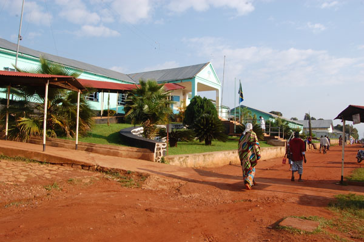
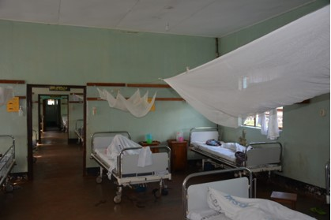

Van een kleine apotheek tot het hart van een regio.
In 1956 begon het met een apotheek en twintig verlosbedden. Nu is Rubya Hospital een ziekenhuis dat 400.000 mensen dient.
In de heuvels boven het Victoriameer
Rubya ligt ± 80 km van Bukoba, de regionale hoofdplaats van West-Lake-Region. Een landelijk gebied met veel verspreide dorpskernen en weinig infrastructuur.
De Nederlandse zusters Franciscanessen uit Breda namen bij de start een bestaande apotheek over van de lokale dorpsdokter. Daaruit groeide een volwaardige medische voorziening voor de hele bevolking.

Zeventig jaar zorg in Rubya
Een ziekenhuis in de heuvels
Nederlandse zusters Franciscanessen uit Breda stichten het ziekenhuis. Het begint met een apotheek en 20 verlosbedden.
Opleiding en eerste arts
Er start een opleiding voor verpleegsters en vroedvrouwen. Dat jaar arriveert ook de eerste Nederlandse tropenarts, uitgezonden door Memisa.
Onderdeel van de Tanzaniaanse gezondheidszorg
Rubya wordt Designated District Hospital van het district Muleba. De overheid betaalt een deel van de salarissen. Datzelfde jaar wordt een 100 meter diep boorgat geslagen voor drinkwater.
Overdracht aan de Afrikaanse congregatie
De Nederlandse zusters dragen het management over. Het ziekenhuis dient inmiddels 400.000 inwoners.
De laatste Nederlandse artsen vertrekken
Nederlanders blijven aanwezig als co-assistenten uit Nijmegen: jonge mensen die drie maanden stage lopen.
Gouden jubileum
Een groot feest, waarvoor het merendeel van het bestuur van de stichting naar Rubya afreist.
Een groot onderhoudsplan
Een tienjarig plan voor de gebouwen start. Ook vallen de watertoren en tank uit 1977 uit.
Nieuwe borehole geopend
Op 31 oktober wordt een tweede waterbron met zonnepanelen feestelijk geopend.
Een verwijsziekenhuis
Patiënten komen van alle kanten met complexe klachten. Het ziekenhuis heeft specialisten, een nieuwe operatiekamer en een intensive care nodig.
Complexere zorg vraagt meer dan een kleurtje verf.
Rond Rubya zijn dispensaries en health centres verbeterd. Daardoor komen er minder patiënten, maar de zieken die komen zijn veel zieker.
Van alle kanten worden patiënten gebracht met complicaties na een keizersnede of verkeersongeval. Door nieuwe asfaltwegen rijden auto's en piki-piki's (taxi-brommertjes) harder, en diabetes en hoge bloeddruk nemen enorm toe.
Specialisten
Een gynaecoloog, chirurg en internist moeten de kwaliteit van zorg vergroten. Daarvoor is ook een stafhuis gebouwd.
Operatiekamer & intensive care
De OK moet worden vernieuwd en er komt een bescheiden ICU. Het Masterplan brengt in kaart wat, waar en in welke volgorde.
Eigen artsen en verpleegkundigen
Studiebeurzen houden talent in de regio: student Elvinus committeerde zich om als arts in Rubya te blijven werken.
Rubya van dichtbij
Help Rubya toekomstbestendig worden
Wij zijn een stichting van vrijwilligers. Uw gift gaat dus voor 100% naar de projecten in Tanzania — en omdat wij ANBI zijn, is uw gift aftrekbaar van de belasting.
NL66ABNA0624513211t.n.v. Stichting Vrienden van Rubya · BIC ABNANL2A